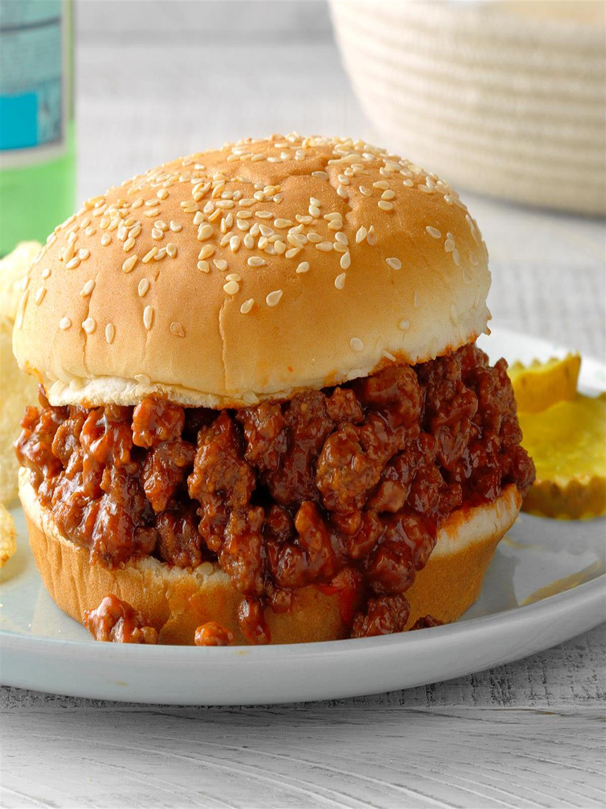

Sloppy Joes

Description
This recipe will show you how to make Sloppy Joe sandwiches.
Ingredients
- 1 1/2 pounds extra lean ground beef
- 1/4 onion, diced
- 2 cloves garlic, minced
- 1 green bell pepper, diced
- 1 cup water
- 3/4 cup ketchup
- 2 tablespoons brown sugar
- 1 teaspoon Dijon mustard
- 1 dash Worcestershire sauce
- 1 1/2 teaspoons salt, or to taste
- 1/2 teaspoon ground black pepper
- 1 cup water
- 1 pinch cayenne pepper, or to taste
Steps
- Combine the ground beef and onion in a cold skillet, place the skillet onto a stove burner, and turn the heat to medium; cook and stir until the beef is crumbly and browned.
- Stir the garlic and bell pepper into the beef mixture; continue cooking and stirring until the vegetables are tender, 2 to 3 more minutes.
- Add 1 cup of water.
- Mix in ketchup, brown sugar, Dijon mustard, Worcestershire, salt, and pepper.
- Pour in 1 more cup of water. Bring to a simmer.
- Reduce heat to low and cook until the mixture becomes very thick, 30 to 45 minutes. Adjust salt and pepper as needed. Season with cayenne.